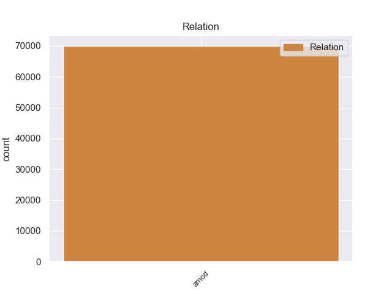
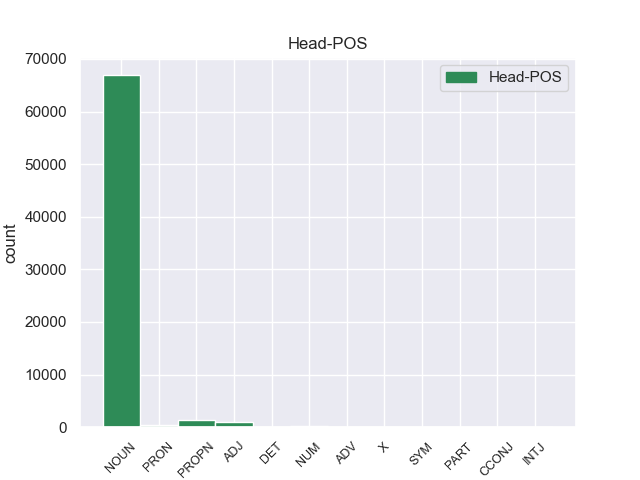
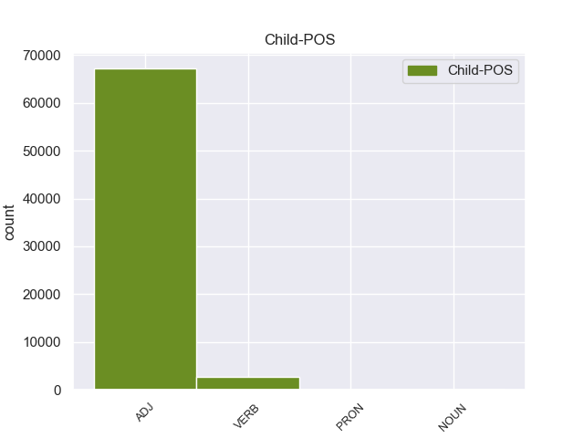

Distribution of features within this leaf



Morphosyntax Rules sorted by frequency.
- When the dependent token is the numeric modifier(nummod) of the head token, and the head token is NOUN and the dependent token is NUM, the Case needs to be Gen.
1 - _ _ _ _ 0 _ _ _
2 Смотрите _ _ _ _ 0 _ _ _
3 , _ _ _ _ 0 _ _ _
4 вон _ _ _ _ 0 _ _ _
5 женщина _ _ _ _ 0 _ _ _
6 с _ _ _ _ 0 _ _ _
7 золотыми _ _ _ _ 0 _ _ _
8 глазами _ _ _ _ 0 _ _ _
9 ! _ _ _ _ 0 _ _ _
10 - _ _ _ _ 0 _ _ _
11 слышится _ _ _ _ 0 _ _ _
12 испуганно _ _ _ _ 0 _ _ _
13 - _ _ _ _ 0 _ _ _
14 восторженный _ _ _ _ 0 _ _ _
15 голос _ _ _ _ 0 _ _ _
16 мамы _ _ _ _ 0 _ _ _
17 , _ _ _ _ 0 _ _ _
18 и _ _ _ _ 0 _ _ _
19 мы _ _ _ _ 0 _ _ _
20 мчимся _ _ _ _ 0 _ _ _
21 куда-то _ _ _ _ 0 _ _ _
22 , _ _ _ _ 0 _ _ _
23 разбивая _ _ _ _ 0 _ _ _
24 толпу _ _ _ _ 0 _ _ _
25 , _ _ _ _ 0 _ _ _
26 задевая _ _ _ _ 0 _ _ _
27 , _ _ _ _ 0 _ _ _
28 чуть _ _ _ _ 0 _ _ _
29 не _ _ _ _ 0 _ _ _
30 опрокидывая _ _ _ _ 0 _ _ _
31 лотки _ _ _ _ 0 _ _ _
32 , _ _ _ _ 0 _ _ _
33 и _ _ _ _ 0 _ _ _
34 вдруг _ _ _ _ 0 _ _ _
35 все _ _ _ _ 0 _ _ _
36 трое _ _ _ _ 0 _ _ _
37 , _ _ _ _ 0 _ _ _
38 разом _ _ _ _ 0 _ _ _
39 остолбенев _ _ _ _ 0 _ _ _
40 , _ _ _ _ 0 _ _ _
41 замираем _ _ _ _ 0 _ _ _
42 в _ _ _ _ 0 _ _ _
43 перехвате _ _ _ _ 0 _ _ _
44 двух два NUM _ Case=Gen 51 nummod 51:nummod _
45 огромных _ _ _ _ 0 _ _ _
46 , _ _ _ _ 0 _ _ _
47 истинно _ _ _ _ 0 _ _ _
48 золотых _ _ _ _ 0 _ _ _
49 , _ _ _ _ 0 _ _ _
50 небывалых _ _ _ _ 0 _ _ _
51 глаз глаз NOUN _ Animacy=Inan|Case=Gen|Gender=Masc|Number=Plur 0 _ _ _
52 . _ _ _ _ 0 _ _ _
1 В _ _ _ _ 0 _ _ _
2 радиусе _ _ _ _ 0 _ _ _
3 трех три NUM _ Case=Gen 0 _ _ _
4 - _ _ _ _ 0 _ _ _
5 пяти пять NUM _ Case=Gen 3 nummod 3:nummod _
6 километров _ _ _ _ 0 _ _ _
7 вокруг _ _ _ _ 0 _ _ _
8 теплостанций _ _ _ _ 0 _ _ _
9 и _ _ _ _ 0 _ _ _
10 обогатительных _ _ _ _ 0 _ _ _
11 фабрик _ _ _ _ 0 _ _ _
12 погибло _ _ _ _ 0 _ _ _
13 все _ _ _ _ 0 _ _ _
14 живое _ _ _ _ 0 _ _ _
15 , _ _ _ _ 0 _ _ _
16 погибла _ _ _ _ 0 _ _ _
17 трава _ _ _ _ 0 _ _ _
18 . _ _ _ _ 0 _ _ _
1 Перепад _ _ _ _ 0 _ _ _
2 давлений _ _ _ _ 0 _ _ _
3 совсем _ _ _ _ 0 _ _ _
4 невелик _ _ _ _ 0 _ _ _
5 - _ _ _ _ 0 _ _ _
6 не _ _ _ _ 0 _ _ _
7 более _ _ _ _ 0 _ _ _
8 шести шесть NUM _ Case=Gen 9 nummod 9:nummod _
9 десятых десятый ADJ _ Case=Gen|Degree=Pos|Number=Plur 0 _ _ _
10 атмосферы _ _ _ _ 0 _ _ _
11 при _ _ _ _ 0 _ _ _
12 угле _ _ _ _ 0 _ _ _
13 подъема _ _ _ _ 0 _ _ _
14 до _ _ _ _ 0 _ _ _
15 трех _ _ _ _ 0 _ _ _
16 градусов _ _ _ _ 0 _ _ _
17 . _ _ _ _ 0 _ _ _
1 Так _ _ _ _ 0 _ _ _
2 , _ _ _ _ 0 _ _ _
3 по _ _ _ _ 0 _ _ _
4 основным _ _ _ _ 0 _ _ _
5 научным _ _ _ _ 0 _ _ _
6 центрам _ _ _ _ 0 _ _ _
7 Европы _ _ _ _ 0 _ _ _
8 из _ _ _ _ 0 _ _ _
9 нескольких _ _ _ _ 0 _ _ _
10 десятков _ _ _ _ 0 _ _ _
11 лингвистических _ _ _ _ 0 _ _ _
12 журналов _ _ _ _ 0 _ _ _
13 , _ _ _ _ 0 _ _ _
14 издаваемых _ _ _ _ 0 _ _ _
15 в _ _ _ _ 0 _ _ _
16 нашей _ _ _ _ 0 _ _ _
17 стране _ _ _ _ 0 _ _ _
18 , _ _ _ _ 0 _ _ _
19 распространяется _ _ _ _ 0 _ _ _
20 не _ _ _ _ 0 _ _ _
21 более более ADV _ Degree=Cmp 0 _ _ _
22 двух два NUM _ Case=Gen 21 nummod 21:nummod SpaceAfter=No
23 - _ _ _ _ 0 _ _ _
24 трех _ _ _ _ 0 _ _ _
25 . _ _ _ _ 0 _ _ _
1 Рано _ _ _ _ 0 _ _ _
2 утром _ _ _ _ 0 _ _ _
3 в _ _ _ _ 0 _ _ _
4 среду _ _ _ _ 0 _ _ _
5 в _ _ _ _ 0 _ _ _
6 непосредственной _ _ _ _ 0 _ _ _
7 близости _ _ _ _ 0 _ _ _
8 от _ _ _ _ 0 _ _ _
9 населенного _ _ _ _ 0 _ _ _
10 пункта _ _ _ _ 0 _ _ _
11 Дорасан _ _ _ _ 0 _ _ _
12 , _ _ _ _ 0 _ _ _
13 расположенного _ _ _ _ 0 _ _ _
14 на _ _ _ _ 0 _ _ _
15 границе _ _ _ _ 0 _ _ _
16 двух два NUM _ Case=Gen 17 nummod 17:nummod _
17 Корей Корея PROPN _ Animacy=Inan|Case=Gen|Gender=Fem|Number=Plur 0 _ _ _
18 , _ _ _ _ 0 _ _ _
19 куда _ _ _ _ 0 _ _ _
20 позднее _ _ _ _ 0 _ _ _
21 прибыл _ _ _ _ 0 _ _ _
22 американский _ _ _ _ 0 _ _ _
23 президент _ _ _ _ 0 _ _ _
24 Джордж _ _ _ _ 0 _ _ _
25 Буш _ _ _ _ 0 _ _ _
26 , _ _ _ _ 0 _ _ _
27 был _ _ _ _ 0 _ _ _
28 задержан _ _ _ _ 0 _ _ _
29 северокорейский _ _ _ _ 0 _ _ _
30 военнослужащий _ _ _ _ 0 _ _ _
31 . _ _ _ _ 0 _ _ _
1 Так _ _ _ _ 0 _ _ _
2 же _ _ _ _ 0 _ _ _
3 как _ _ _ _ 0 _ _ _
4 выбор _ _ _ _ 0 _ _ _
5 народа _ _ _ _ 0 _ _ _
6 в _ _ _ _ 0 _ _ _
7 пользу _ _ _ _ 0 _ _ _
8 большевиков _ _ _ _ 0 _ _ _
9 во _ _ _ _ 0 _ _ _
10 время _ _ _ _ 0 _ _ _
11 Гражданской _ _ _ _ 0 _ _ _
12 войны _ _ _ _ 0 _ _ _
13 , _ _ _ _ 0 _ _ _
14 как _ _ _ _ 0 _ _ _
15 участие _ _ _ _ 0 _ _ _
16 миллионов _ _ _ _ 0 _ _ _
17 наших _ _ _ _ 0 _ _ _
18 граждан _ _ _ _ 0 _ _ _
19 всех _ _ _ _ 0 _ _ _
20 национальностей _ _ _ _ 0 _ _ _
21 в _ _ _ _ 0 _ _ _
22 терроре _ _ _ _ 0 _ _ _
23 - _ _ _ _ 0 _ _ _
24 в _ _ _ _ 0 _ _ _
25 красном _ _ _ _ 0 _ _ _
26 терроре _ _ _ _ 0 _ _ _
27 1918 _ _ _ _ 0 _ _ _
28 - _ _ _ _ 0 _ _ _
29 1921 _ _ _ _ 0 _ _ _
30 годов _ _ _ _ 0 _ _ _
31 и _ _ _ _ 0 _ _ _
32 в _ _ _ _ 0 _ _ _
33 большом _ _ _ _ 0 _ _ _
34 терроре _ _ _ _ 0 _ _ _
35 1937 1937 NUM _ _ 0 _ _ _
36 - _ _ _ _ 0 _ _ _
37 1938-го 1938-й ADJ _ Case=Gen|Degree=Pos|Gender=Masc|Number=Sing 35 nummod 35:nummod SpaceAfter=No
38 , _ _ _ _ 0 _ _ _
39 и _ _ _ _ 0 _ _ _
40 в _ _ _ _ 0 _ _ _
41 голодоморе _ _ _ _ 0 _ _ _
42 , _ _ _ _ 0 _ _ _
43 и _ _ _ _ 0 _ _ _
44 в _ _ _ _ 0 _ _ _
45 коллективизации _ _ _ _ 0 _ _ _
46 . _ _ _ _ 0 _ _ _
1 Один _ _ _ _ 0 _ _ _
2 он _ _ _ _ 0 _ _ _
3 здесь _ _ _ _ 0 _ _ _
4 был _ _ _ _ 0 _ _ _
5 такой _ _ _ _ 0 _ _ _
6 и _ _ _ _ 0 _ _ _
7 , _ _ _ _ 0 _ _ _
8 когда _ _ _ _ 0 _ _ _
9 поймал _ _ _ _ 0 _ _ _
10 призывный _ _ _ _ 0 _ _ _
11 взгляд _ _ _ _ 0 _ _ _
12 еще _ _ _ _ 0 _ _ _
13 одного один NUM _ Case=Gen|Gender=Masc 14 nummod 14:nummod _
14 такого такой DET _ Case=Gen|Gender=Masc|Number=Sing 0 _ _ _
15 же _ _ _ _ 0 _ _ _
16 , _ _ _ _ 0 _ _ _
17 выделившего _ _ _ _ 0 _ _ _
18 Монахова _ _ _ _ 0 _ _ _
19 из _ _ _ _ 0 _ _ _
20 всей _ _ _ _ 0 _ _ _
21 толпы _ _ _ _ 0 _ _ _
22 как _ _ _ _ 0 _ _ _
23 своего _ _ _ _ 0 _ _ _
24 , _ _ _ _ 0 _ _ _
25 взгляд _ _ _ _ 0 _ _ _
26 , _ _ _ _ 0 _ _ _
27 приглашавший _ _ _ _ 0 _ _ _
28 поделиться _ _ _ _ 0 _ _ _
29 скептической _ _ _ _ 0 _ _ _
30 улыбкой _ _ _ _ 0 _ _ _
31 посвященности _ _ _ _ 0 _ _ _
32 , _ _ _ _ 0 _ _ _
33 то _ _ _ _ 0 _ _ _
34 надо _ _ _ _ 0 _ _ _
35 отдать _ _ _ _ 0 _ _ _
36 Монахову _ _ _ _ 0 _ _ _
37 должное _ _ _ _ 0 _ _ _
38 , _ _ _ _ 0 _ _ _
39 не _ _ _ _ 0 _ _ _
40 стал _ _ _ _ 0 _ _ _
41 ответно _ _ _ _ 0 _ _ _
42 подмигивать _ _ _ _ 0 _ _ _
43 , _ _ _ _ 0 _ _ _
44 а _ _ _ _ 0 _ _ _
45 смутился _ _ _ _ 0 _ _ _
46 , _ _ _ _ 0 _ _ _
47 застиг _ _ _ _ 0 _ _ _
48 себя _ _ _ _ 0 _ _ _
49 , _ _ _ _ 0 _ _ _
50 нелюбезно _ _ _ _ 0 _ _ _
51 увел _ _ _ _ 0 _ _ _
52 взор _ _ _ _ 0 _ _ _
53 - _ _ _ _ 0 _ _ _
54 отделил _ _ _ _ 0 _ _ _
55 себя _ _ _ _ 0 _ _ _
56 и _ _ _ _ 0 _ _ _
57 от _ _ _ _ 0 _ _ _
58 этого _ _ _ _ 0 _ _ _
59 товарища _ _ _ _ 0 _ _ _
60 . _ _ _ _ 0 _ _ _
1 А _ _ _ _ 0 _ _ _
2 всего _ _ _ _ 0 _ _ _
3 по _ _ _ _ 0 _ _ _
4 стране _ _ _ _ 0 _ _ _
5 - _ _ _ _ 0 _ _ _
6 80 _ _ _ _ 0 _ _ _
7 соединений _ _ _ _ 0 _ _ _
8 и _ _ _ _ 0 _ _ _
9 воинских _ _ _ _ 0 _ _ _
10 частей часть NOUN _ Animacy=Inan|Case=Gen|Gender=Fem|Number=Plur 0 _ _ _
11 ( _ _ _ _ 0 _ _ _
12 из _ _ _ _ 0 _ _ _
13 них они PRON _ Case=Gen|Number=Plur|Person=3 10 nummod 10:nummod _
14 72 _ _ _ _ 0 _ _ _
15 в _ _ _ _ 0 _ _ _
16 структуре _ _ _ _ 0 _ _ _
17 Министерства _ _ _ _ 0 _ _ _
18 обороны _ _ _ _ 0 _ _ _
19 , _ _ _ _ 0 _ _ _
20 3 _ _ _ _ 0 _ _ _
21 в _ _ _ _ 0 _ _ _
22 пограничных _ _ _ _ 0 _ _ _
23 войсках _ _ _ _ 0 _ _ _
24 и _ _ _ _ 0 _ _ _
25 5 _ _ _ _ 0 _ _ _
26 во _ _ _ _ 0 _ _ _
27 внутренних _ _ _ _ 0 _ _ _
28 войсках _ _ _ _ 0 _ _ _
29 ) _ _ _ _ 0 _ _ _
30 . _ _ _ _ 0 _ _ _
non-conforming Examples:
1 Своевременно _ _ _ _ 0 _ _ _
2 исправлять _ _ _ _ 0 _ _ _
3 повреждения _ _ _ _ 0 _ _ _
4 не _ _ _ _ 0 _ _ _
5 удавалось _ _ _ _ 0 _ _ _
6 по _ _ _ _ 0 _ _ _
7 трем три NUM _ Case=Dat 8 nummod 8:nummod _
8 причинам причина NOUN _ Animacy=Inan|Case=Dat|Gender=Fem|Number=Plur 0 _ _ _
9 : _ _ _ _ 0 _ _ _
10 во-первых _ _ _ _ 0 _ _ _
11 , _ _ _ _ 0 _ _ _
12 заявка _ _ _ _ 0 _ _ _
13 на _ _ _ _ 0 _ _ _
14 специалистов _ _ _ _ 0 _ _ _
15 , _ _ _ _ 0 _ _ _
16 посланная _ _ _ _ 0 _ _ _
17 за _ _ _ _ 0 _ _ _
18 номером _ _ _ _ 0 _ _ _
19 таким-то _ _ _ _ 0 _ _ _
20 , _ _ _ _ 0 _ _ _
21 удовлетворена _ _ _ _ 0 _ _ _
22 не _ _ _ _ 0 _ _ _
23 более _ _ _ _ 0 _ _ _
24 чем _ _ _ _ 0 _ _ _
25 на _ _ _ _ 0 _ _ _
26 десять _ _ _ _ 0 _ _ _
27 процентов _ _ _ _ 0 _ _ _
28 и _ _ _ _ 0 _ _ _
29 линейные _ _ _ _ 0 _ _ _
30 кадры _ _ _ _ 0 _ _ _
31 до _ _ _ _ 0 _ _ _
32 сих _ _ _ _ 0 _ _ _
33 пор _ _ _ _ 0 _ _ _
34 не _ _ _ _ 0 _ _ _
35 укомплектованы _ _ _ _ 0 _ _ _
36 ; _ _ _ _ 0 _ _ _
37 во-вторых _ _ _ _ 0 _ _ _
38 , _ _ _ _ 0 _ _ _
39 работу _ _ _ _ 0 _ _ _
40 тормозили _ _ _ _ 0 _ _ _
41 неблагоприятные _ _ _ _ 0 _ _ _
42 метеорологические _ _ _ _ 0 _ _ _
43 условия _ _ _ _ 0 _ _ _
44 ; _ _ _ _ 0 _ _ _
45 в-третьих _ _ _ _ 0 _ _ _
46 … _ _ _ _ 0 _ _ _
1 Три _ _ _ _ 0 _ _ _
2 окна _ _ _ _ 0 _ _ _
3 в _ _ _ _ 0 _ _ _
4 домике _ _ _ _ 0 _ _ _
5 были _ _ _ _ 0 _ _ _
6 ярко _ _ _ _ 0 _ _ _
7 освещены _ _ _ _ 0 _ _ _
8 , _ _ _ _ 0 _ _ _
9 а _ _ _ _ 0 _ _ _
10 в _ _ _ _ 0 _ _ _
11 двух два NUM _ Case=Loc 12 nummod 12:nummod _
12 крайних крайний ADJ _ Case=Loc|Degree=Pos|Number=Plur 0 _ _ _
13 , _ _ _ _ 0 _ _ _
14 о _ _ _ _ 0 _ _ _
15 которых _ _ _ _ 0 _ _ _
16 говорила _ _ _ _ 0 _ _ _
17 Ефимова _ _ _ _ 0 _ _ _
18 , _ _ _ _ 0 _ _ _
19 света _ _ _ _ 0 _ _ _
20 не _ _ _ _ 0 _ _ _
21 было _ _ _ _ 0 _ _ _
22 . _ _ _ _ 0 _ _ _
1 Конструктивно _ _ _ _ 0 _ _ _
2 комплекс _ _ _ _ 0 _ _ _
3 " _ _ _ _ 0 _ _ _
4 КОБА _ _ _ _ 0 _ _ _
5 " _ _ _ _ 0 _ _ _
6 выполнен _ _ _ _ 0 _ _ _
7 в _ _ _ _ 0 _ _ _
8 виде _ _ _ _ 0 _ _ _
9 трансформируемого _ _ _ _ 0 _ _ _
10 компактного _ _ _ _ 0 _ _ _
11 контейнера _ _ _ _ 0 _ _ _
12 , _ _ _ _ 0 _ _ _
13 который _ _ _ _ 0 _ _ _
14 переносится _ _ _ _ 0 _ _ _
15 на _ _ _ _ 0 _ _ _
16 спине _ _ _ _ 0 _ _ _
17 одним один NUM _ Case=Ins|Gender=Masc 18 nummod 18:nummod _
18 бойцом боец NOUN _ Animacy=Anim|Case=Ins|Gender=Masc|Number=Sing 0 _ _ _
19 в _ _ _ _ 0 _ _ _
20 сложенном _ _ _ _ 0 _ _ _
21 виде _ _ _ _ 0 _ _ _
22 и _ _ _ _ 0 _ _ _
23 снаряжен _ _ _ _ 0 _ _ _
24 двумя _ _ _ _ 0 _ _ _
25 зарядами _ _ _ _ 0 _ _ _
26 . _ _ _ _ 0 _ _ _
1 Конструктивно _ _ _ _ 0 _ _ _
2 комплекс _ _ _ _ 0 _ _ _
3 " _ _ _ _ 0 _ _ _
4 КОБА _ _ _ _ 0 _ _ _
5 " _ _ _ _ 0 _ _ _
6 выполнен _ _ _ _ 0 _ _ _
7 в _ _ _ _ 0 _ _ _
8 виде _ _ _ _ 0 _ _ _
9 трансформируемого _ _ _ _ 0 _ _ _
10 компактного _ _ _ _ 0 _ _ _
11 контейнера _ _ _ _ 0 _ _ _
12 , _ _ _ _ 0 _ _ _
13 который _ _ _ _ 0 _ _ _
14 переносится _ _ _ _ 0 _ _ _
15 на _ _ _ _ 0 _ _ _
16 спине _ _ _ _ 0 _ _ _
17 одним _ _ _ _ 0 _ _ _
18 бойцом _ _ _ _ 0 _ _ _
19 в _ _ _ _ 0 _ _ _
20 сложенном _ _ _ _ 0 _ _ _
21 виде _ _ _ _ 0 _ _ _
22 и _ _ _ _ 0 _ _ _
23 снаряжен _ _ _ _ 0 _ _ _
24 двумя два NUM _ Case=Ins 25 nummod 25:nummod _
25 зарядами заряд NOUN _ Animacy=Inan|Case=Ins|Gender=Masc|Number=Plur 0 _ _ _
26 . _ _ _ _ 0 _ _ _
1 Он _ _ _ _ 0 _ _ _
2 развязал _ _ _ _ 0 _ _ _
3 ушанку _ _ _ _ 0 _ _ _
4 , _ _ _ _ 0 _ _ _
5 одной один NUM _ Case=Ins|Gender=Fem 6 nummod 6:nummod _
6 рукой рука NOUN _ Animacy=Inan|Case=Ins|Gender=Fem|Number=Sing 0 _ _ _
7 упирается _ _ _ _ 0 _ _ _
8 в _ _ _ _ 0 _ _ _
9 щит _ _ _ _ 0 _ _ _
10 орудия _ _ _ _ 0 _ _ _
11 , _ _ _ _ 0 _ _ _
12 другой _ _ _ _ 0 _ _ _
13 машет _ _ _ _ 0 _ _ _
14 . _ _ _ _ 0 _ _ _